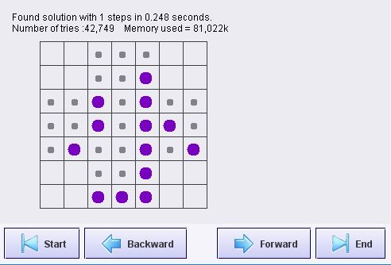
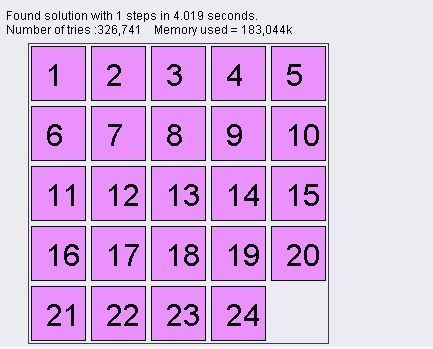
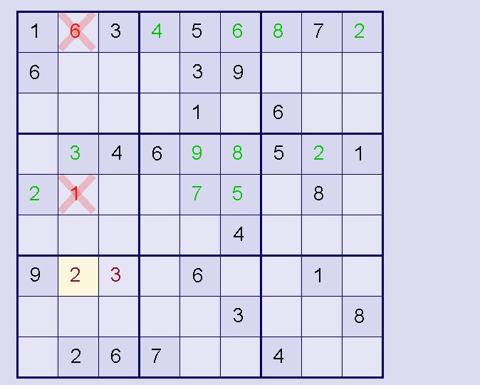
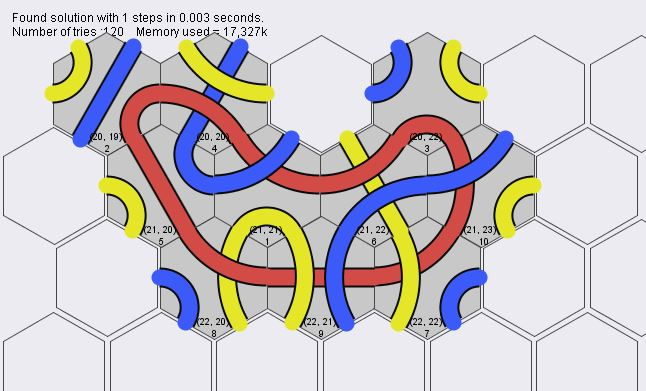
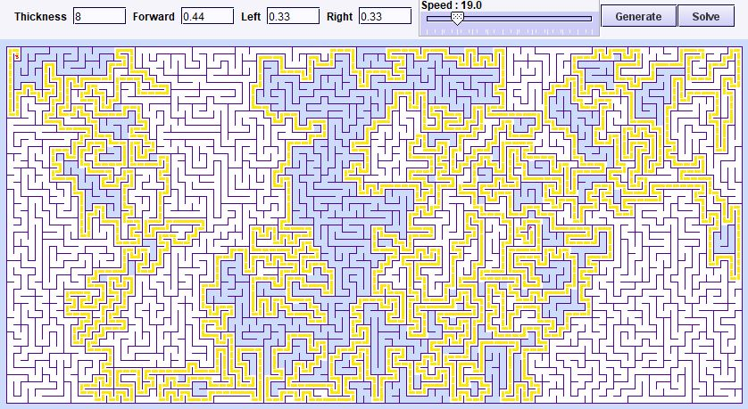
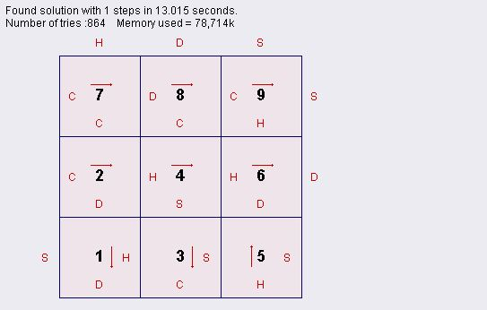
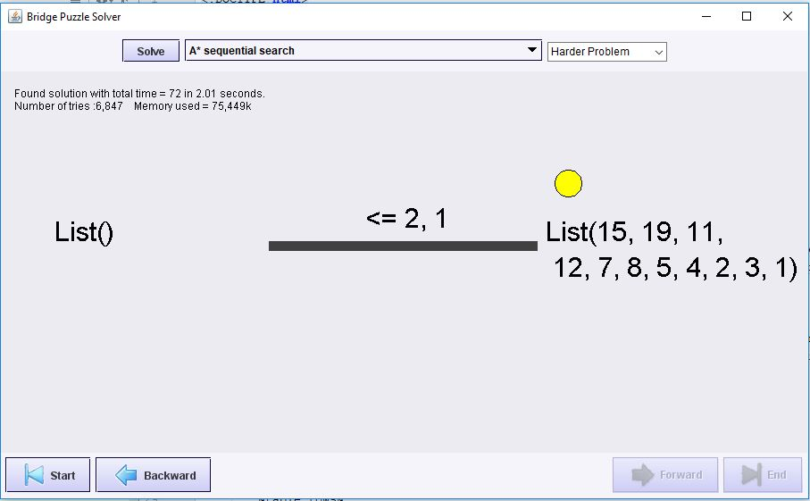
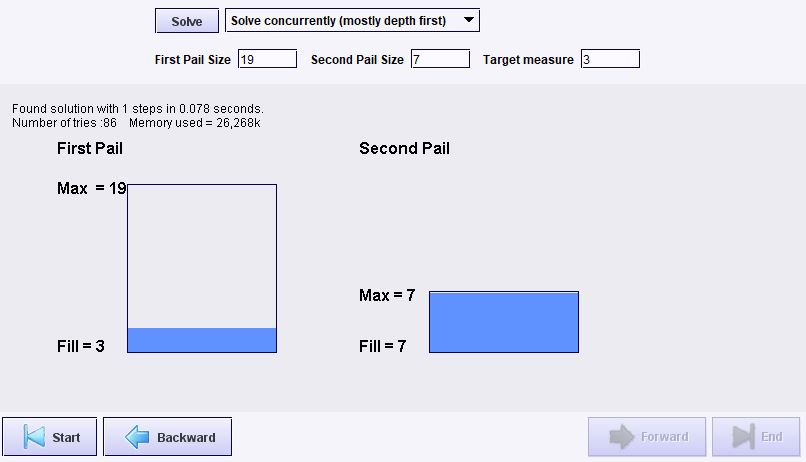

This project is a Scala puzzle framework. Example implementations for puzzles like Sudoku, Hi-Q, One Tough Puzzle, Tantrix, and others, are provided.
Download this zip file and unzip it. Then in the bin directory run one of commands indicated below. Since these commands do not require arguments, you can just double click on them in the file explorer to run them.
Hi-Qbb4-hiq Hi-Q is another one of those games that can be very frustrating without the aid of a computer. The object is to have only 1 peg in the center position when you are done. This simulation takes into account board symmetry, and while searching it keeps track of the paths that it has tried. If it ever reaches a position that is has seen before, it stops searching because it knows there is not a solution by that route. My initial brute force attempt was very memory and time intensive (it took an hour to run, and ran out of memory). Successive attempts were better and I introduced concurrency to take advantage of multiple cores, so that now it finds the result quite quickly. |
 |
Sliding Puzzlebb4-slidingpuzzle In the sliding puzzle you slide tiles around until the numbers are in order, or some picture is completed. There is one tile missing, which allows the rest to move around. Typical sizes are n^2-1, or 8, 16, and 25. |
 |
Sudoku Puzzlebb4-sudoku Sudoku is the a populat puzzle based on latin squares. I'm not all that good at solving them by hand, so I wrote a program to do it. Generation takes longer, because we start with a solved board and randomly remove all the numbers we can and still infer a solution. That means we have to solve the whole board each time we remove a number. I originally collaborated with my mother, an avid soduko player and retired programmer, when developing the code. More recently I changed the solver to take an approach suggested by Peter Norvig. |
 |
Tantrix Puzzlebb4-tantrix Tantrix is another one of those games that can be very frustrating without the aid of a computer. There are a variety of different strategies that you can use for solving. Some work better than others. |
 |
Amazing Maze Puzzlebb4-maze You can get different types of mazes by varying the parameters. I originally made this program to help my 3 year old son, Brian, control a pencil better. He really enjoys doing the mazes. I hope you will too! |
 |
One Tough Puzzlebb4-redpuzzle The Red Puzzle (Also Called "One Tough Puzzle" from Great American Puzzle Factory, Inc) is a 9 piece jigsaw puzzle. It is very hard because every piece has four nubs. There are no edge pieces. There are over 300,000 incorrect configurations. The brute force solver will solve it in about 5,000 - 60,000 iterations. It shuffles the pieces so there is a different result each time. The search algorithm tries pieces until it finds one that doesn't fit. If none of the remaining pieces fit after all rotations have been tried, it backtracks one position and tries again. Its guaranteed to find a solution if there is one. Brute force was too slow, so I created other solvers that use concurrency and genetic algorthm search to make finding the solution much faster. The letters indicate the shape of the nub: Heart, Diamond, Club or Spade. Maybe someday I will draw the pieces as they really look. |
 |
Bridge Crossing with Flashlightbb4-bridge The Bridge crossing puzzle is a common brain teaser. Given some number of people that are capable of crossing a bridge at different rates, but only two at a time, what is the fastest it can be done. They must cross at night and only have one flashlight. The problem is analogous to scheduling tasks to maximize throughput. |
 |
Two Pails Puzzlebb4-twopails This version of the water pouring problem was inspired by Peter Norvig"s Design of Computer Programs class on Udacity. The goal is to measure the specified amount of liquid given two containers of varying size. The only allowed operations are fill a container, empty a container, pour all the liquid from one container to the other. Sometimes the problem cannot be solved. |
 |